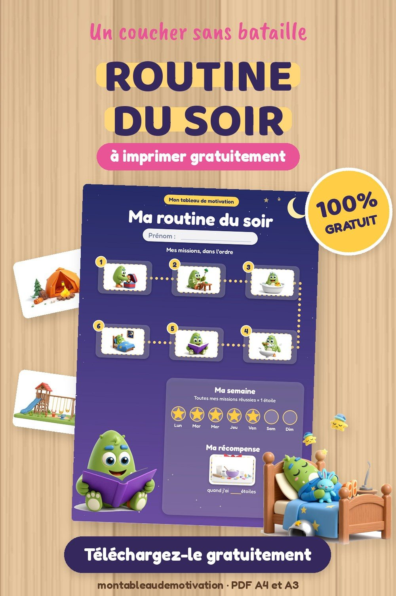
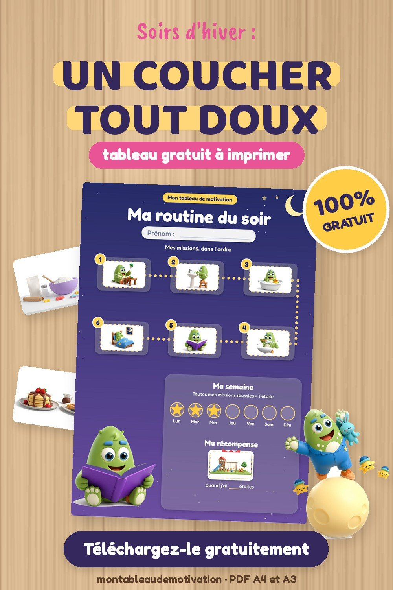
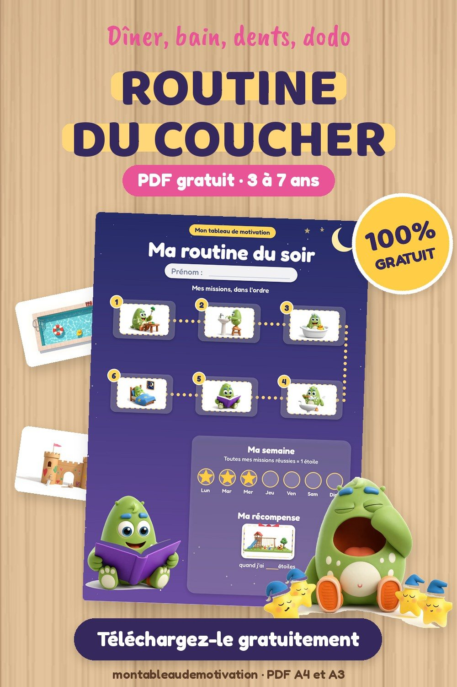
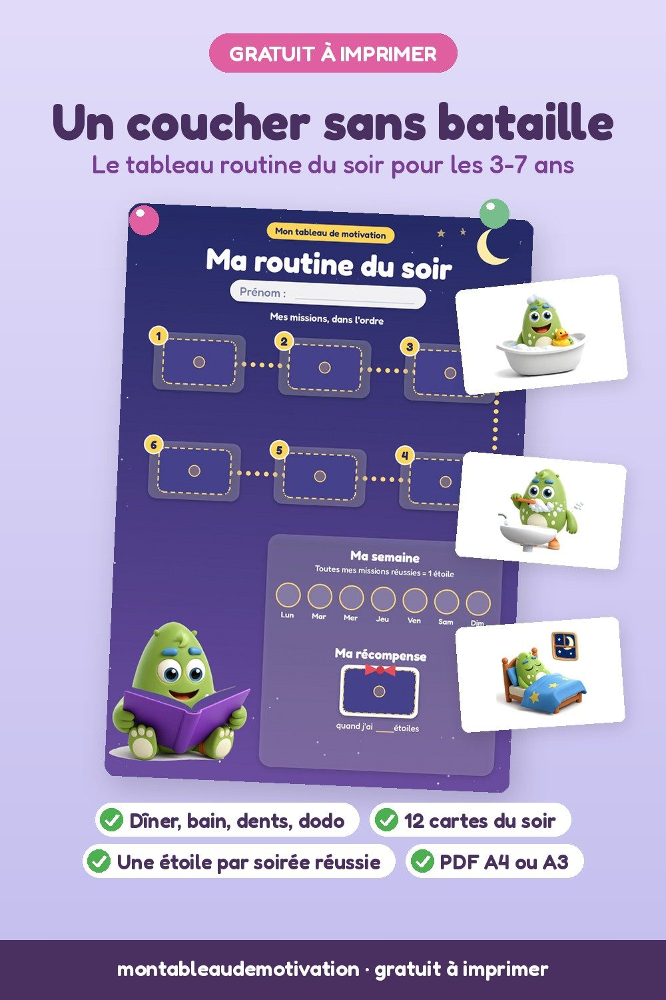
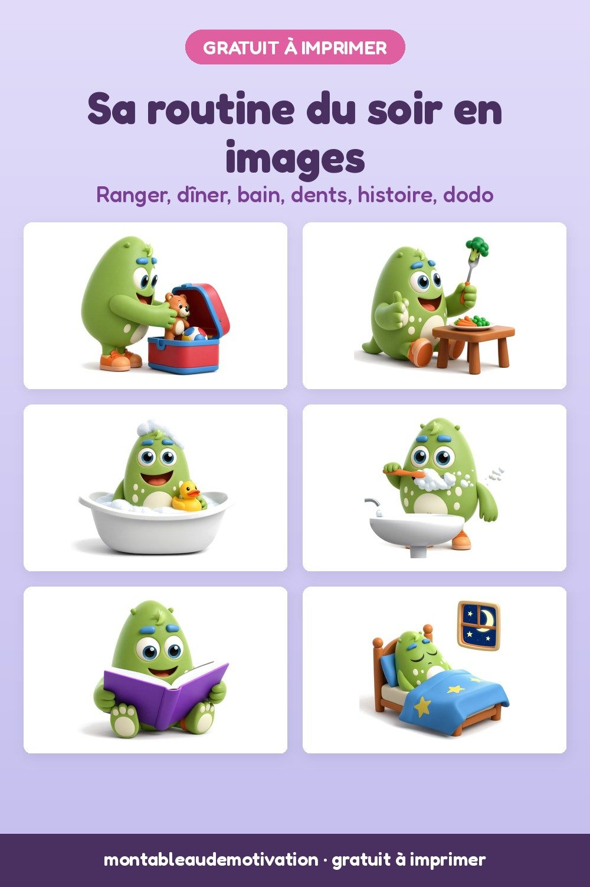
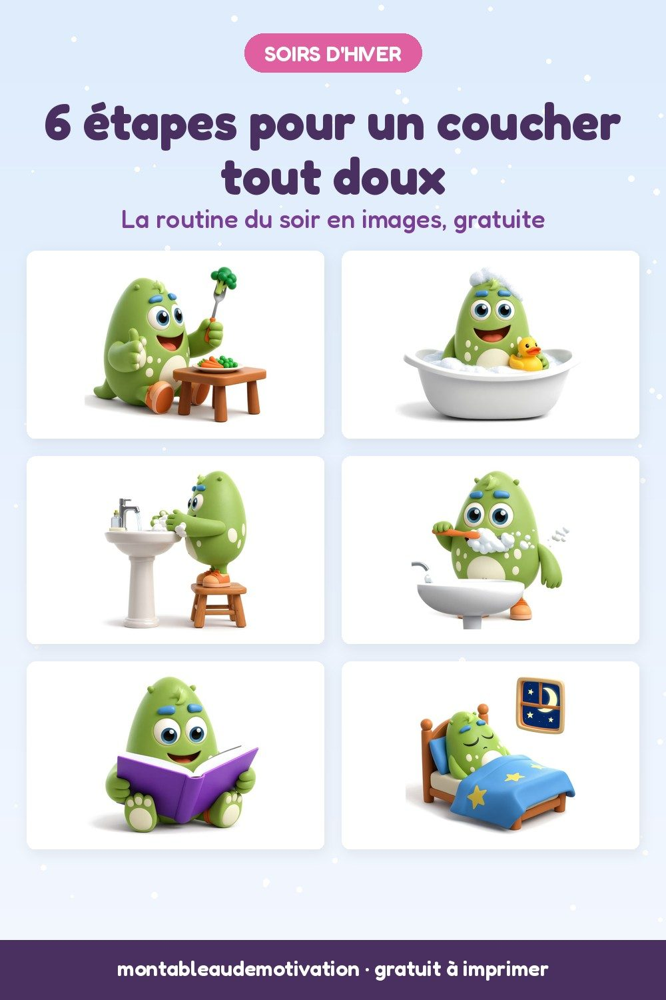

Routine du soir · 3 à 7 ans
Le chemin des missions
Les 6 missions dans l'ordre, de 1 à 6. Tout est fait ? Une étoile pour la soirée.
Télécharger le PDF (A4) ou en grand format A3 Mon Tableau de Motivation
Mon Tableau de Motivation
Dîner, bain, dents, pyjama, histoire, dodo : avec des cartes en images, votre enfant suit sa routine du soir tout seul, et le coucher devient plus calme. Pour les 3 à 7 ans.
Voir les 3 tableaux du soir ↓Le soir, les enfants sont fatigués, et c'est souvent le moment des négociations : « encore cinq minutes », « j'ai soif », « un dernier bisou »… Une routine toujours identique rassure l'enfant : il sait ce qui va se passer, et son corps comprend peu à peu que l'heure du dodo approche.
Avec un tableau en images, ce n'est plus vous qui dites « au lit ! » : c'est le tableau. Votre enfant voit les étapes qui restent, il les fait dans l'ordre, et il est fier de finir son chemin jusqu'au lit.
Gardez l'ordre le même tous les soirs. Le PDF contient 12 cartes du soir pour composer la routine qui correspond à votre famille.
Les besoins varient d'un enfant à l'autre, mais en général un enfant de 3 à 5 ans dort environ 10 à 13 heures par nuit, et un enfant de 6 à 10 ans environ 9 à 12 heures. Comptez à rebours depuis l'heure du réveil pour trouver la bonne heure de coucher, et commencez la routine 30 à 45 minutes avant.
💡 Astuce : laissez votre enfant choisir entre deux pyjamas ou deux histoires. Il se sent écouté, et il y a moins d'opposition.
100 % gratuit · à imprimer à la maison
Chaque PDF contient le tableau, 12 cartes du soir avec Moty en 3D, 64 cartes récompenses et un mode d'emploi.
Les 6 missions dans l'ordre, de 1 à 6. Tout est fait ? Une étoile pour la soirée.
Télécharger le PDF (A4) ou en grand format A3
Une ligne par mission, une colonne par jour : une étoile à chaque mission réussie.
Télécharger le PDF (A4) ou en grand format A3
Votre enfant déplace chaque carte vers « Fait ! ». Toutes y sont ? Une étoile pour la soirée.
Télécharger le PDF (A4) ou en grand format A3





Vos questions
Dès les premiers mois, une routine simple aide le bébé. Le tableau en images devient utile vers 3 ans, quand l'enfant peut suivre des étapes seul.
Entre 30 et 45 minutes environ, bain compris. Plus court, c'est la course ; beaucoup plus long, l'enfant s'excite à nouveau.
Oui, les PDF sont gratuits, sans inscription, à imprimer à la maison en A4 ou en A3.
Raccompagnez-le au lit calmement, sans discussion, autant de fois que nécessaire. Ajoutez une carte « je reste dans mon lit » à sa routine, avec une étoile le matin s'il a réussi.
Il existe aussi des tableaux routine du matin, avec leurs propres cartes. Beaucoup de familles accrochent les deux côte à côte.
Les histoires de Moty
Une histoire douce pour les 3-6 ans, à lire juste avant de dormir. Avec un tableau du soir à colorier à la fin du livre.

Tome 2
Il a soif, il veut un bisou… Sous le lit, de toutes petites étoiles l'attendent pour partir au pays des rêves. Avec un tableau du soir à colorier.
📖 Voir sur AmazonSans imprimer
L'application Mon Tableau de Motivation reprend les mêmes missions, les mêmes récompenses en 3D et les mêmes 5 étoiles, sur votre téléphone et sur celui de votre enfant. 7 jours d'essai gratuit.
Les autres guides